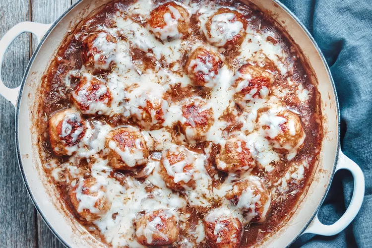

Description

French onion chicken meatballs are richly seasoned meatballs baked with a rich French onion sauce and topped with melted Gruyère cheese.
This meal is fit for hosting guests.
Serve them with egg noodles or seasoned red potatoes and French bread on the side.
Ingredients
- 1 pound ground chicken
- ½ cup bread crumbs
- 1 (1 ounce) package dry French onion soup mix
- 1 egg
- 1 teaspoon minced garlic
- 2 tablespoons unsalted butter
- 2 medium onions, thinly sliced
- 1 tablespoon white sugar
- 1 tablespoon olive oil
- ⅓ cup red wine
- ½ teaspoon salt
- ¼ teaspoon ground black pepper
- 1 ½ cups beef broth
- ½ teaspoon dried thyme
- 1 tablespoon all-purpose flour
- 6 ounces Gruyère cheese, shredded
Steps
- Preheat the oven to 400 degrees F (200 degrees C).
- Combine ground chicken, bread crumbs, onion soup mix, egg, and garlic in a medium bowl until well incorporated; form into sixteen 1 1/2-inch meatballs.
- Melt butter in a saucepan over medium heat. Add onions and sugar; cook until onions are softened, about 12 minutes.
- Meanwhile, heat olive oil in an oven-safe skillet over medium-high heat. Add meatballs; cook, flipping occasionally, until edges are browned, about 4 minutes.
- Transfer skillet to the preheated oven; bake meatballs until no longer pink in centers, about 15 minutes. Check meatballs halfway through; flip if they are browning too much on the bottom.
- Stir red wine, salt, and black pepper into onions; cook over medium heat for 3 minutes. Stir in beef broth and thyme; bring to a boil. Reduce heat to low; slowly stir in flour. Cook until slightly thickened, 2 to 3 minutes more.
- Remove meatballs from the oven; pour onion sauce over top. Cover with Gruyère cheese; return skillet to the oven until melted, about 5 minutes.